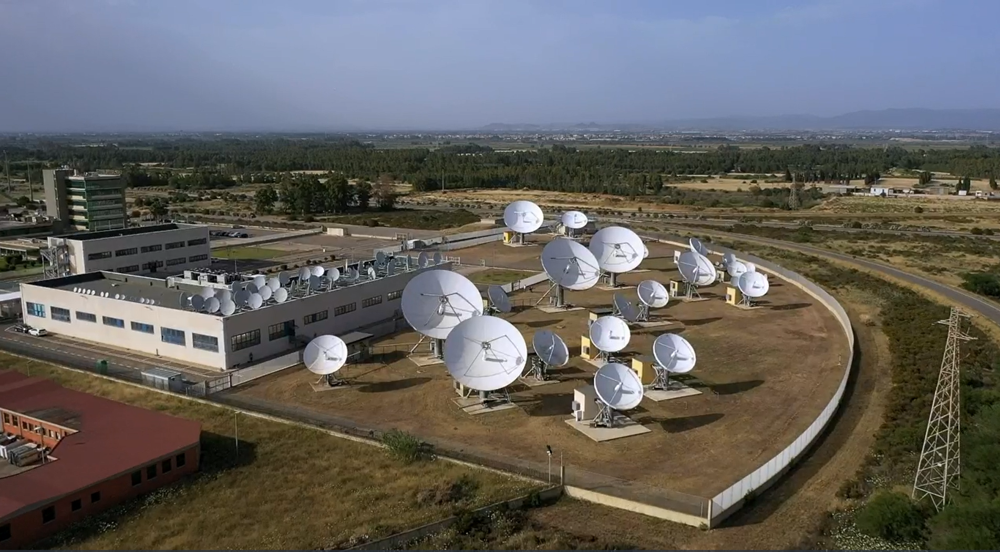

ST Engineering Idirect via Sortis team
Llevo aproximadamente dos años trabajando en una empresa española afincada en madrid llamada Sortis para el cliente ST Engineering Idirect como Associate Engineer, enfocándome en el soporte técnico de nivel Capa 2 a Capa 3 y en la instalación y mantenimiento de redes satelitales. Esta experiencia me ha brindado la oportunidad de familiarizarme y especializarme en una amplia gama de tecnologías, herramientas y plataformas, incluyendo Python, networking, Jira, Salesforce, y conocimientos especializados en RF.
Mi expertise técnico abarca áreas como networking con configuraciones avanzadas de Switches, Routers, Firewalls, VLANs y DMZs; administración de sistemas Linux; scripting y automatización usando Python; y administración de infraestructura cloud. Además, he utilizado herramientas como PuTTY, Wireshark, TCPdump, Grafana, Any Desk, y TeamViewer en mi trabajo diario. A través de la revisión de métricas y KPIs, he identificado anomalías y gestionado proactivamente posibles incidentes, siempre manteniendo los SLAs con nuestros clientes.
Una parte esencial de mi labor ha sido el uso intensivo de Salesforce, donde no solo he analizado y generado gráficos de rendimiento, sino que también he empleado la IA para predecir tendencias y patrones en los casos. De hecho, he llevado a cabo proyectos significativos en esta área, como puedes ver en mi proyecto relacionado.

Mi interés en la ciencia de datos, junto con mi sólida base técnica, ha sido una combinación potente que me ha permitido aportar de manera decisiva a proyectos y al equipo. Con la adopción de metodologías ágiles, hemos garantizado la entrega de soluciones eficientes. He liderado personalmente instalaciones tanto dentro de la Unión Europea como internacionalmente, siendo el enlace principal con los clientes y garantizando la calidad en cada implementación.